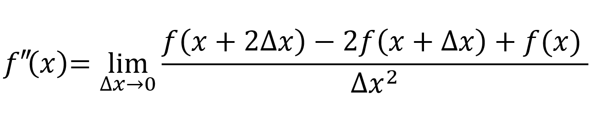

La derivada de primer orden de una función es la pendiente de la línea tangente (línea que intersecta en un único punto de dicha función). Es por esto que para encontrar la derivada, deben tomarse dos puntos de la función tal que la distancia entre ellos sea casi nula. Debido a esto, la derivada se define como un límite en el que la diferencia de x tiende a cero.
Al definir la segunda derivada, nos encontramos con varios patrones. Los más notorios son, por un lado, el decremento gradual de 'dx' en el numerador. Por otro lado encontramos un incremento en el exponente de 'dx' en el denominador.

Y por último, encontramos fuertemente un patrón del
triángulo de Pascal en el numerador.
Estos tres patrones nos permiten establecer una definición general
para cualquier derivada de orden 'n'.
Como puede observarse en la imagen del triángulo de Pascal, se encuentra el patrón del numerador en las dos definiciones anteriores (nivel 1 y 2 -donde el nivel de la cima es 0-). Por ejemplo, en el nivel dos se encuentran: 1, 2 y 1, justo como en la definición de la segunda derivada. Así, tenemos que la definición general para cualquier derivada de orden 'n', es la siguiente:
Nota:
Para encontrar los valores correspondientes para cualquier nivel del triángulo
de Pascal, debe de hacerse uso de combinatorias.
Notación:
f(x) = 5x^3
| x | f(x) | f '(x) | f ''(x) |
|---|---|---|---|
| -5 | -625 | 375 | -150 |
| -4 | -320 | 240 | -120 |
| -3 | -135 | 135 | -90 |
| -2 | -40 | 60 | -60 |
| -1 | -5 | 15 | -30 |
| 0 | 0 | 0 | 0 |
| 1 | 5 | 15 | 30 |
| 2 | 40 | 60 | 60 |
| 3 | 135 | 135 | 90 |
| 4 | 320 | 240 | 120 |
| 5 | 625 | 375 | 150 |